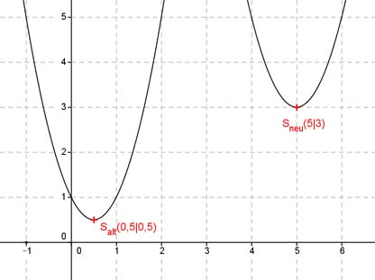

Aufgabe 105 Der Scheitelpunkt der Parabel y = 2x2 - 2x + 1 wird in den Punkt (5|3) verschoben. Bestimmen Sie die Funktionsgleichung der verschobenen Parabel. Bestimmung der Scheitelpunkform: y = 2x2 - 2x + 1 | :2 y --- = x2 - x + 0,5 2 Quadratische Ergänzung : y --- = x2 - x + 0,25 - 0,25 + 0,5 2 mit x2 - x + 0,25 = (x - 0,5)2 y --- = (x - 0,5)2 + 0,25 | *2 2 y = 2(x - 0,5)2 + 0,5 Die Koordinaten des neuen Scheitelpunktes (5|3) eingesetzt: y = 2(x - 5)2 + 3 